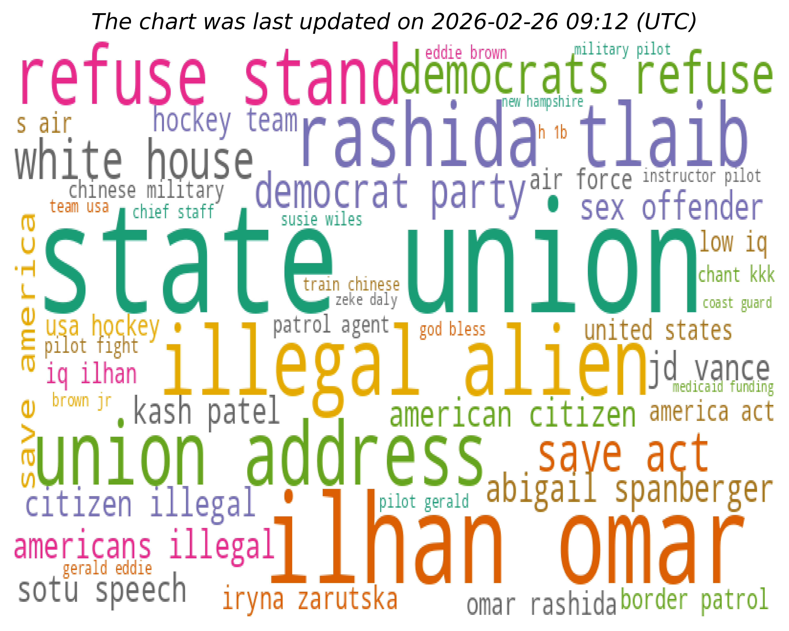

What's up with The Donald?
An analytic tool capturing the latest misinformation trend
I'm a dashboard summarizing what folks are chatting about on The Donald, where many diehard fans of the 45th president congregate. Every few hours, I pull the 500 most popular posts from the landing page on The Donald, crunch some numbers and then show a picture of what they are discussing, so that you don't have to go there.
The 50 most-mentioned bigrams in the last 24 hours
- "Bigrams" refer to two adjacent words. It provides a snapshot of the topics
- In order to gain the meaningful insights, some commonly used words, such as determinters (i.e. "a" and "the") and auxiliary words (i.e. "will" and "can"), have been excluded from the underlining data. The word "trump" has also been removed.

Most popular posts from last 24 hours
Posts mentioning election vs election fraud
- This stacked chart compares claims of election fraud against election-related content in each day's posts. As voting is about to begin in many states, we may see the red area taking up more space compared to the green in the chart.
- Election-related keywords include but not excluding to "election", "ballot" and "votes." For fraud, a post must mention one of those election keywords in conjuction with "steal", "rig", "cheat" or similiar words in the same sentence.

Top Youtube videos from the past 3 days
- Cross-platform sharing, an integral part of the internet and social media ecosystem, is often difficult to study.
- YouTube has made up nearly 50 percent of the video content shared on this site. Analyzing the videos shared on The Donald can help detect popular but misleading information on YouTube.
- The "brief_description" field captures the first sentence from a Youtube video's full description, if available.